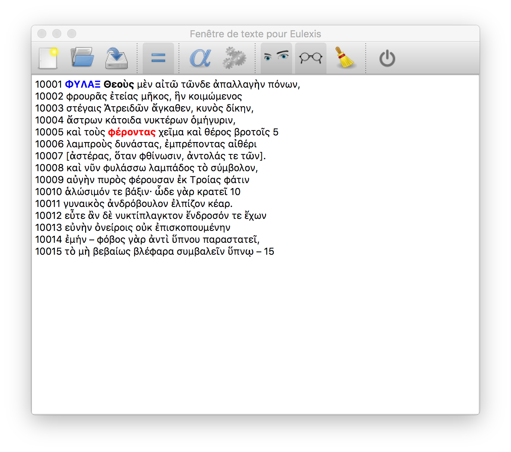

Eulexis v.1.1 – guide juin 2020
précédent : Fenêtre de texte index suivant : Mise à jour
Pour préparer une liste de vocabulaire, il peut être utile de lemmatiser directement un fichier (avec le texte) et de produire un fichier qui pourra être manipulé avec un tableur. Le format le plus simple qui soit est le CSV (Character Separated Values) où la tabulation est choisie comme séparateur (les traductions pouvant contenir des virgules, ces dernières ne peuvent pas convenir comme séparateur de colonnes). D'autre part, comme le fichier va contenir les mots grecs et les traductions en caractères latins, il est naturel d'utiliser l'unicode et son encodage le plus répandu : l'UTF-8. Ce qui peut poser des problèmes aux outils archaïques de microsoft, en particulier Excel. Mais le fichier obtenu s'ouvre sans difficulté avec LibreOffice.
Lorsque l'on choisit, dans le menu Fichier, l'item Txt2csv, s'ouvre une fenêtre de dialogue pour ouvrir un fichier *.txt. L'utilisateur va donc indiquer le fichier qu'il veut traiter. Le programme va créer automatiquement dans le même répertoire un fichier avec le même nom que celui ouvert mais avec l'extension csv. Ainsi, le traitement d'un fichier Aeschylus.txt va produire un fichier Aeschylus.csv.
Le TextiColor a d'abord été introduit dans Collatinus à la demande de Jan Bart, un enseignant hollandais qui voulait fournir des vrais textes à ses élèves, tout en leur indiquant les mots difficiles. J'ai réalisé ensuite qu'il pouvait être un outil utile pour la chasse aux coquilles ou autres fautes d'OCR. L'idée est de profiter de la lemmatisation d'un fichier pour produire une autre version du texte dans laquelle des couleurs ont été ajoutées. Pour des raisons de simplicité, je produis un fichier html que l'utilisateur devra ensuite récupérer dans son traitement de texte préféré. Comme précédemment, le nom du fichier produit découle naturellement de celui du fichier d'origine. Pour reprendre l'exemple précédent, on obtiendra un fichier Aeschylus.htm.

L'option TextiColor a aussi un effet dans la fenêtre de texte lors d'une lemmatisation de l'ensemble du texte (en respectant l'ordre des mots, c'est à dire en utilisant le bouton avec les engrenages). Le texte d'origine est remplacé par le texte colorisé. Dans l'exemple ci-dessus, j'ai remplacé un ο (omicron) par un o (o-latin) dans le mot φέρoντας qui n'est pas reconnu : il apparaît donc en gras et en rouge. Les autres difficultés sont aussi en gras. La couleur reflète la “gravité” de la faute (la plus grave l'emporte).
Remarque : malgré la colorisation, le texte peut être lemmatisé.
À des fins pédagogiques, il peut être utile d'expliciter les élisions qui sont marquées par une apostrophe à la fin d'un mot. Cette tâche est évidemment trop difficile pour un ordinateur et elle revient donc à l'enseignant. Toutefois, pour lui faciliter le travail, l'ordinateur peut surligner en jaune les apostrophes rencontrées. Cette option ne fonctionne que si l'option TextiColor est active.
Cette option a été ajoutée pour essayer de contourner l'incapacité d'Excel à ouvrir proprement un fichier CSV codé en UTF-8. En effet, microsoft semble camper sur un encodage obsolète des caractères. Personnellement, je recommande l'utilisation de LibreOffice qui sait parfaitement ouvrir les fichiers CSV en UTF-8 sans avoir à ajouter ce pseudo-caractère BOM au début du fichier (d'autant que son efficacité ne semble pas garantie).
précédent : Fenêtre de texte index suivant : Mise à jour